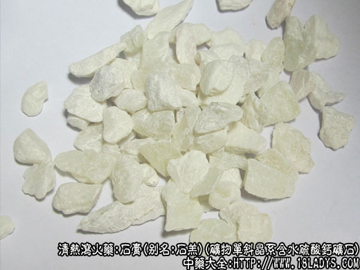

本品为常用中药。《神农本草经》列为中品。
别名：石羔。
来源：为矿物单斜晶系含水硫酸钙矿石。石膏常生成于海湾，盐湖和内陆湖泊中形成的沉积岩中常与石灰岩、粘土，岩盐共生。
产地：主产于湖北省应城，以及山东、山西、四川、广东等省。
性状鉴别：本品多呈不规则的块片状，大小不一。为纤维状结晶的聚合体。全体呈白色，灰白色或肉红色。天然横平面平坦，无光泽及纹理，并常附有青灰色或灰黄色片状薄泥石层。体重质稍松软，易碎断。用指甲可以剥离。纵断面具纤维状纹理，并有绢丝样光泽。小碎块可用手捻成细粉。气无味道味淡。
以块大色白无杂石者为佳。
主要成分：生石膏为含水硫酸钙，煅石膏为无水硫酸钙。
药理作用：清热泻火、解渴除烦。
1、解热。经动物实验证实有解热作用。可能通过抑制产热中枢而起解热作用。而且，可能由于发汗中枢同时被抑制，故本品解热而不发汗，尤其适用于高热。解热作用较持久。
2、镇静。石膏所罕的钙质对神经肌肉有抑制作用，故烦躁用之合适；作为辅助治疗药物，对高热引起的抽搐也有一定的镇痉作用。
3、消炎。因钙质能降低血管通透性，故有消炎作用。
炮制：生用或煅用。
性味：辛甘寒。
归经：入肺、胃、三焦经。
功能：清热降火，除烦止渴。
主治：壮热烦渴，肺热喘咳。谵语狂燥，因胃火引起的牙痛，头痛。为清解胃实热之要药。煅后外用生肌，敛疮，治烫火伤，痈疽溃疡等症。还可作石膏绷带治疗骨伤。
临床应用：主要用于治疗里热证候，为治疗温热病的要药。
1、用于治疗温热病中期和极期的气分实热。凡肺炎、流行性脑膜炎，乙型脑炎等热性感染性疾病，有高热、烦躁、大渴、大汗、口干、苔黄、脉洪大，均可用石膏解热镇静，常配知母，方如石膏知母汤（旧名白虎汤）。如属营分、血分证候，有神昏、谵语、发斑（皮下出血），石膏要加重用，并要加配生地、犀角等，方如清瘟败毒饮。
在这里特别要指出，石膏对温热病过程中日哺（下午4～6时）发热较甚者，更为适用；又温病之烦渴（属细胞脱水），虽饮水也不能止，但用石膏后能解渴（作用原理还未明了）；此外，对脑膜炎的高热头痛，用石膏后常可收到一定的缓解效果。
2、用于治疗温热病后期，余热未退，心胸烦闷，口干喜饮，舌红少苔、脉虚数。可用石膏清其余热，并配竹叶、麦冬等，如竹叶石膏汤。
3、用于治疗较严重的外感病（如流行性感冒）发展至有里热症状（如烦躁）。此时单用解表药效力已不够，要加入石膏，放如大青龙汤（用麻黄解表寒、石膏清里热）。
至于年长儿童患麻疹反应较剧烈，有高热烦躁时，在应用透疹药（如升麻、西河柳）基础上，加入石膏，亦属必要。
4、用于治疗胃火牙痛（牙周病、牙龈炎等）、口腔炎等，以石膏配熟地、知母，方如玉女煎。
5、用于产后某些热象，如产妇自觉有热，性情焦躁、恶心、呕吐、无乳或少乳，可用生石膏配竹茹、白薇、甘草等。过去认为产后宜温，石膏慎用，但实际上只要辩证准确，配伍得当，也可适当应用。
6、外用治疗火油烫伤，以生石膏粉铺创面，有凉感，并能止痛。
此外，石膏还可用于治疗高血压，但只适于体质壮硕，表里俱实，有头痛、便秘、心烦、脉有力者，石膏可用30～60g，配牛膝15～24g，赤芍9g，甘草3g。
对轻症水肿患者，如外有表症，内有里热，表现头寒、头痛、口渴、心烦、尿赤者，也可用石膏配麻黄，表里双解，利水退肿，方如越婢汤。
又煅石膏粉外敷湿疹创面，可减少分泌。
使用注意：1、石膏只用于实证。如体质素虚，或有慢性、消耗性疾病者，一般不宜应用，必须使用时，应加参（人参或党参）调补。
2、石膏用时须打碎，先煎20分钟。
3、内服均可用生石膏，外用煅石膏。
用量：石膏质重，须用重量，量小无效，内服起码18～30g，在治温热病去实热时，用量尤大，成人用60～120g，幼儿也要用30g左右，一般清热消炎用量较小。
处方举例：1、石膏知母汤（旧名白虎汤）《伤寒论》：生石膏60g、知母15g、甘草6g、粳米12g，水煎服。
2、清瘟败毒饮《疫疹一得》：生石膏60g（打碎先煎），知母9g，生地20g，犀角0.6g（研末冲），黄连6g，栀子6g，黄芩6g，连翘9g，丹皮6g，桔梗6g，玄参9g，甘草3g，水煎服。
3、竹叶石膏汤《伤寒论》：竹叶15g，生石膏30g（打碎先煎），麦冬9g，孩儿参（党参）12g，法夏9g，炙甘草4.5g，粳米9g，水煎服。
4、大青龙汤《伤寒论》：麻黄9g，桂枝6g，杏仁9g，炙甘草6g，生石膏18g（打碎先煎），生姜6g，大枣5枚，水煎服。
5、玉女煎《景岳全书》：生石膏24g（打碎先煎），熟地24g，麦冬12g，知母12g，牛膝9g，水煎服。
6、越婢汤《伤寒论》：麻黄9g，生石膏24g《打碎先煎》，生姜9g，大枣4枚，甘草6g，水煎服。
注：1、广东钦州湾所产石膏为肉红色块片，表面常附有红色粘土。略似山东产的寒水石，但块层较厚。
2、山东潍坊地产的薄片红色石膏有些地区作寒水石用。